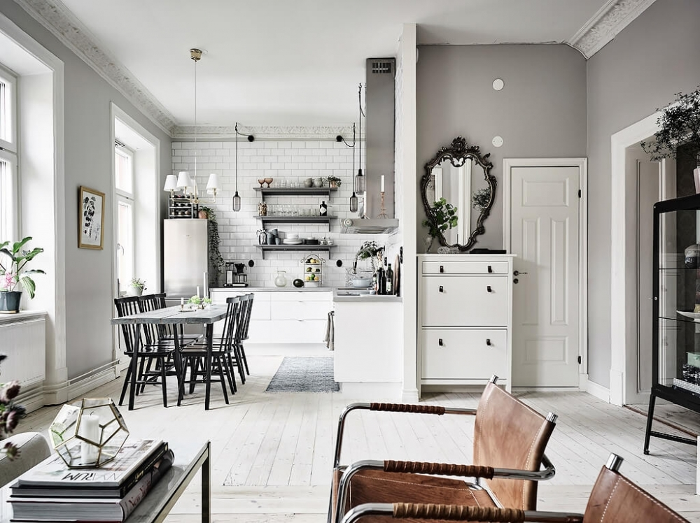
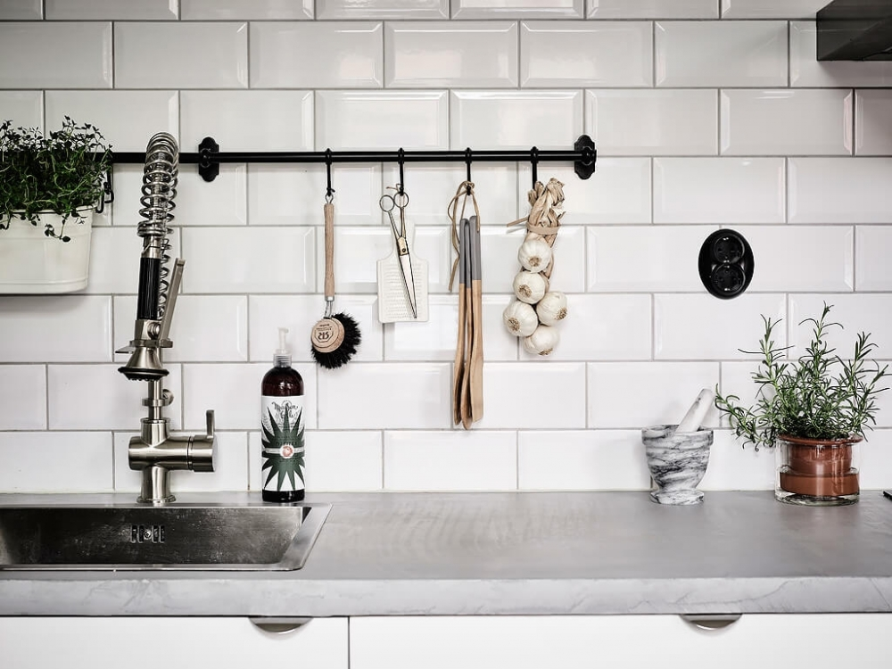

На кухне лежит чеснок, висит лук, а в горшке растет розмарин.
Кажется, будто вы попали в квартиру, из которой только десять минут ушли хозяева.
Даже лимоны остались надрезанные.
Присмотревшись внимательно к кухне, можно заметить,
что тут соблюдено правило золотого треугольника.
Зона для готовки, мойка и холодильник расположены максимально комфортно.
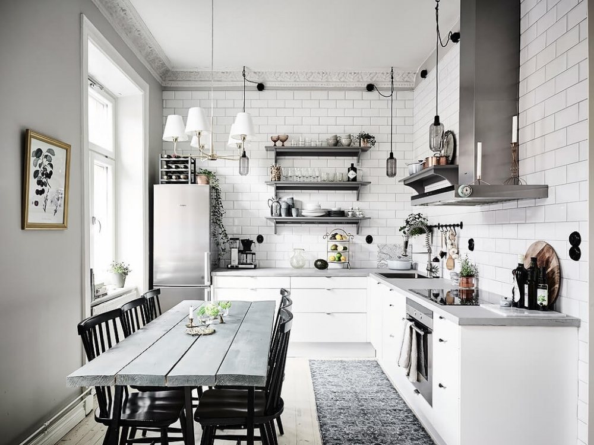
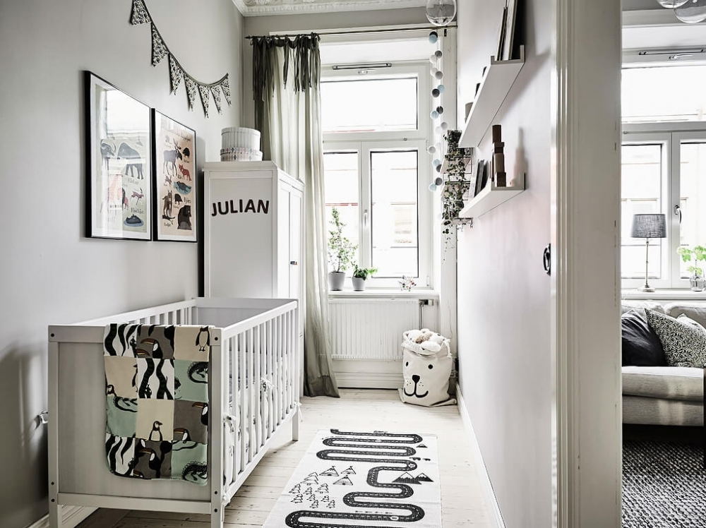
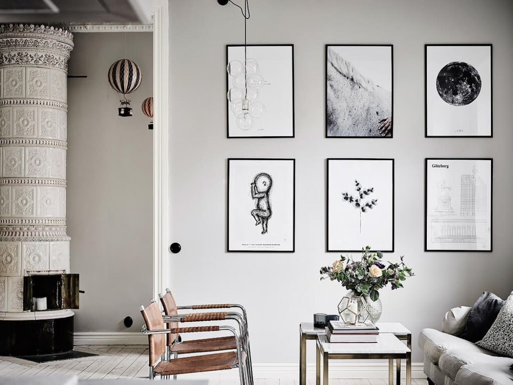
Детская комната не большая, но уютная с традиционно скандинавской обстановкой.
Обратите внимание,
что шведам совершенно не нужно устанавливать шкафы купе.
Все помещается в обычный небольшой шкаф, а иногда в комод.
Какая шведская квартира без камина.
Этот элемент интерьера уже просто своим появлением согревает помещение
и создает совершенно другое отношение к холодным цветам.

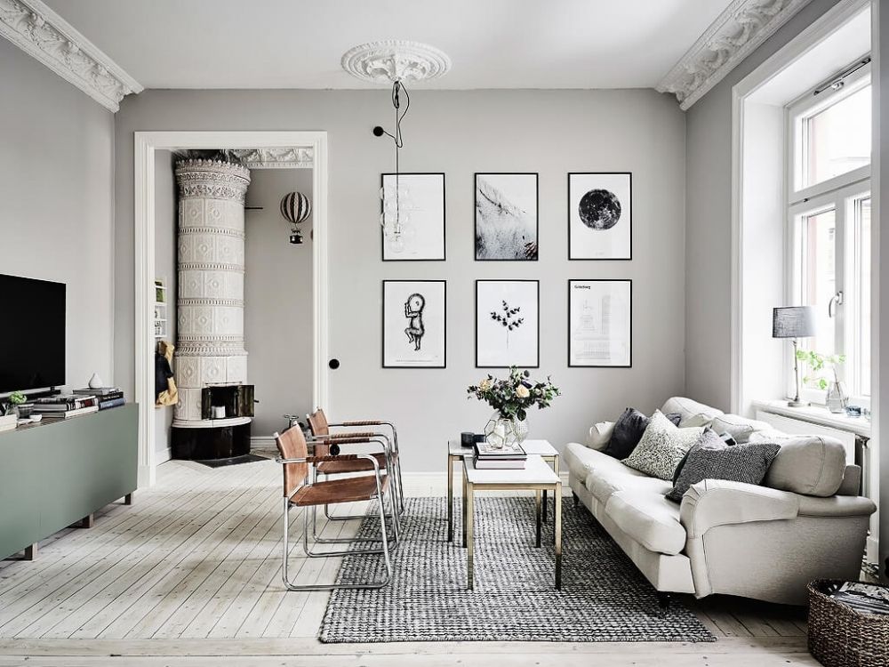

Объединение кухни и гостиной делает и без того свободное помещение еще больше.
Стоит обратить внимание на картины, которые элегантно разбавляют все
нейтральные цвета интерьера.
Обеденный стол на шесть человек отлично вписан в общую зону.
При желании из-за стола можно смотреть телевизор или общаться с теми,
кто занял место на диване.
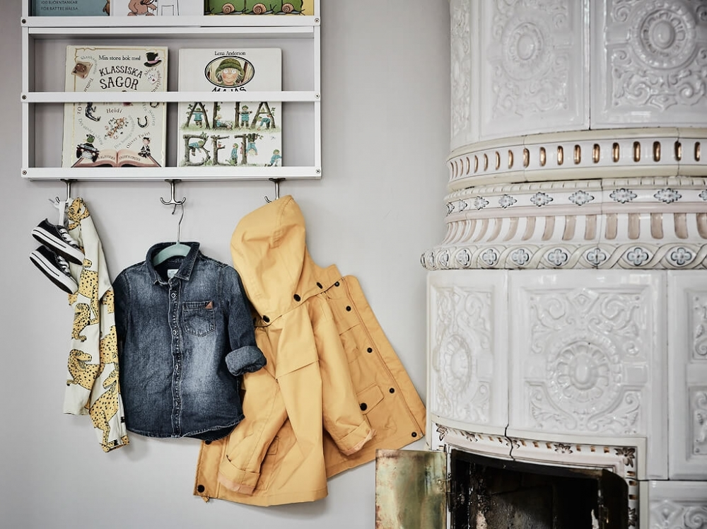
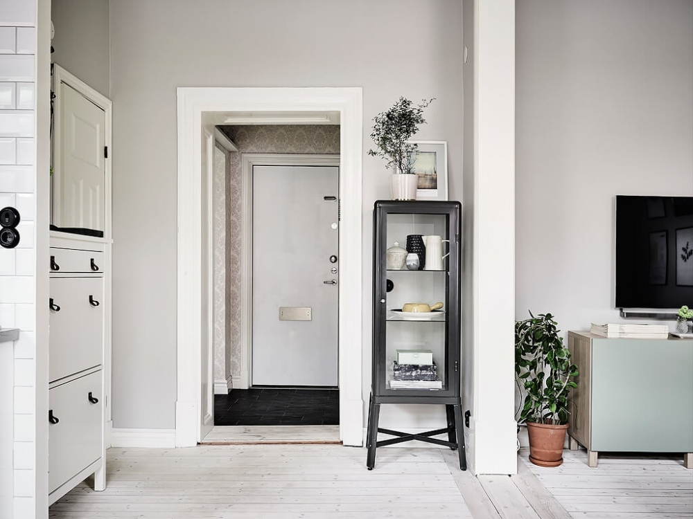
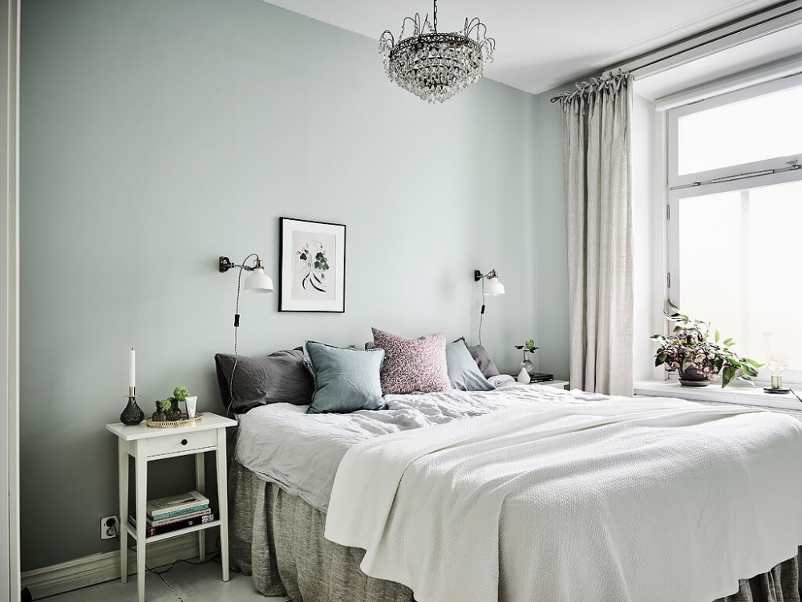
Обращая взор вверх, можно увидеть небольшие трещины на старой лепнине,
которые замазаны краской. Наверное, недавно в помещении был косметический ремонт.
Тоже можно сказать и про старинные двери,
у которых уже немного треснул наличник и само покрытие неоднократно покрывалось краской.
Посмотрите на точечно расставленные цветы в помещении.
Практически везде они создают самое яркое пятнышко в квартире.
Не нужно думать о громоздких шкафчиках, куда можно поставить все тарелки и бокалы.
Достаточно открытых полок.
Но это вариант не для ленивых,
так как нужно будет заставлять себя протирать посуду каждую неделю от пыли.
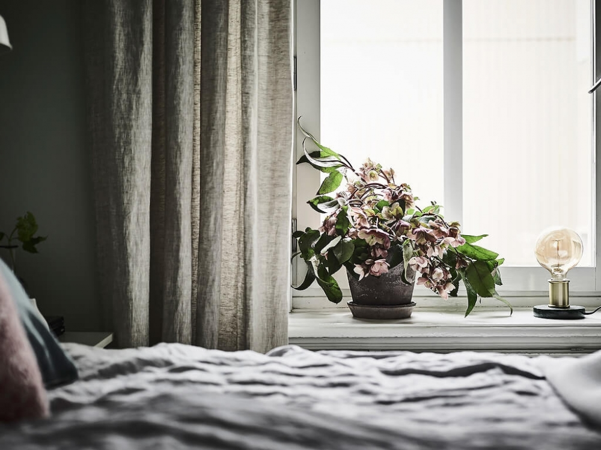
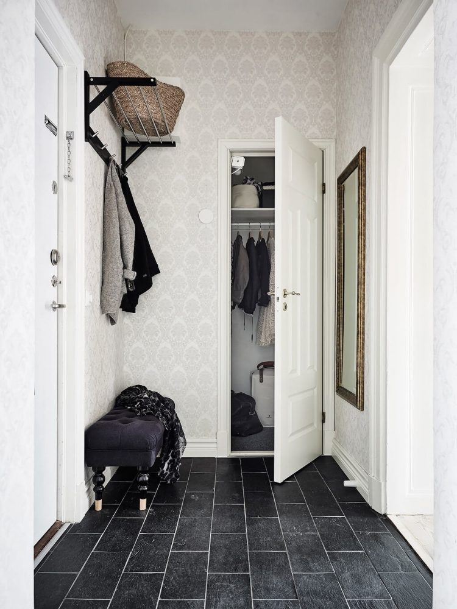